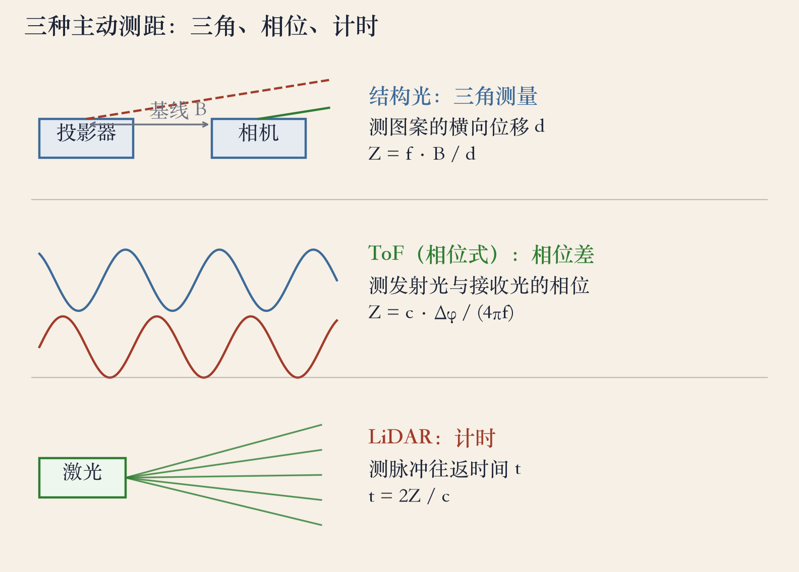
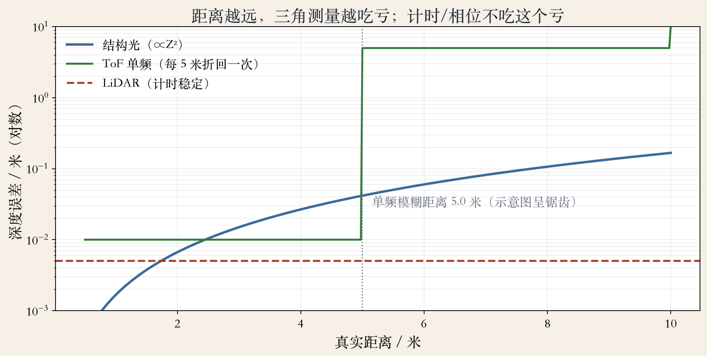
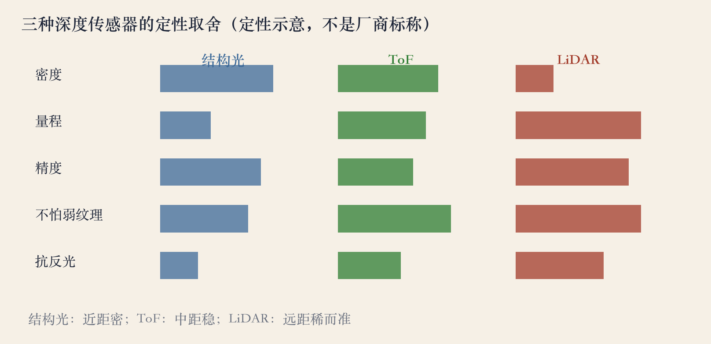

主动测距
深度相机：自己发光测距
双目和单目靠环境光，弱纹理、黑暗、反光会失灵。
主动传感器自己发光，再测光怎么回来。
书上第 816 页：主动照明早就用来造深度传感器。
彩色图加深度图叫 RGB-D；标定比算法更关键。
依据：原书第 816 页
三条路线
结构光：三角测量
ToF：相位差
LiDAR：往返计时
正课第一百零八集
01 / 10
三种原理
三条路线：三角、相位、计时
结构光测图案横向位移，靠三角测量。
ToF 以相位式为例，测发射和接收的相位差。
LiDAR 测脉冲往返时间。
结构光要基线；ToF 和 LiDAR 发射接收同站。
依据：原书第 816–819 页

三种主动测距：结构光三角、ToF（相位式）、LiDAR 计时｜程序生成，未用教材或论文原图
正课第一百零八集
02 / 10
Kinect 散斑
Kinect 散斑：给白墙造纹理
书上第 818 页：Kinect 投红外散斑，是标定好的伪随机图案。
测散斑在红外相机里的横向位移，就能算深度。
没被点到的像素，用插值补上。
遮挡处有黑阴影，强阳光会冲淡红外图案。
依据：原书第 818 页
散斑要点
图案提前标定
投影器和相机不能乱动
密度决定空间分辨率
功率决定量程
正课第一百零八集
03 / 10
三角测量
结构光：Z = fB/d
知道光条平面方程，用三角测量反推三维位置。
基线 0.1 米、焦距 600 像素，2 米处视差 30 像素。
深度误差和距离平方成正比：4 米是 2 米的 4 倍。
5 米误差约 0.042 米；近距准，远距迅速变差。
依据：原书第 816 页；本集实验
Z = f·B / d
f 焦距、B 基线、d 视差；深度误差与 Z² 成正比
正课第一百零八集
04 / 10
ToF
ToF：测光走了多久
书上第 819 页：脉冲光积分回波，得到每个像素的飞行时间。
Kinect V2 改用 ToF，测幅度调制光的相位。
ToF 发射接收同站，不需要基线，不怕弱纹理。
相位有周期：超过一个周期就分不清，叫模糊距离。
依据：原书第 819 页
两种 ToF
脉冲：直接计时，没有周期歧义
相位：精度高，有模糊距离
相位怕多路径反射
正课第一百零八集
05 / 10
模糊距离
模糊距离：5 米外折回
30 兆赫单频，模糊距离 5.00 米。
7 米目标折回成 2.00 米。
30 和 40 兆赫双频，拍频量程 14.99 米，解出 7.00 米。
频率越低量程越大，越高精度越高；拍频之外还会模糊。
依据：本集实验

误差随距离：结构光 ∝Z²、ToF 单频 5 米折回、LiDAR 稳定｜程序生成，未用教材或论文原图
正课第一百零八集
06 / 10
编码结构光
编码与主动立体：给像素编号
书上第 817 页：逐位投影 10 次，定位 1024 列。
格雷码相邻码字只差一位，抗误判比二进制好。
书上第 819 页：主动立体投随机条纹，造合成纹理。
编码要多次投影、精度高；主动立体一次投影，适合动态场景。
依据：原书第 817/819 页
两种做法
编码：每列有唯一编号
主动立体：一次投影配双目
代价：图案污染彩色图
正课第一百零八集
07 / 10
LiDAR
LiDAR：远而稀的点云
书上第 816 页：LiDAR 和激光扫描器曾经很贵，后来小型化。
10 米往返 66.7 纳秒，100 米 667.1 纳秒。
64 线、每线 1024 点，一圈 65536 个点。
1920×1080 图像覆盖率约 3.2%；远、准，但点云稀疏。
依据：原书第 816 页；本集实验
LiDAR 特点
测脉冲往返时间
不怕弱纹理
点云稀疏、角度精确
常和相机融合
正课第一百零八集
08 / 10
失败模式
失败模式：镜子、玻璃、阳光
书上第 820 页：太反光的表面会出错，镜子会被当成场景。
理想正对平面镜、镜后有空间：2 米测成 4 米，误差 2 米。
遮挡有阴影，强阳光压低信噪比，多台设备互相干扰。
镜面、玻璃、水面是难点；深度图不是真值。
依据：原书第 820 页
失效清单
镜面反射
半透明物体
烟雾和雨滴
多机互扰
正课第一百零八集
09 / 10
选型
选型：没有一种通吃
结构光近距密，怕远、怕镜子。
ToF 中距稳，要解相位模糊。
LiDAR 远距稀而准，成本高；自动驾驶常配摄像头。
选型看场景：人脸用结构光，手机后摄用 ToF/LiDAR。
依据：原书第 816–820 页；本集实验

结构光 / ToF / LiDAR 的定性取舍｜程序生成，未用教材或论文原图
正课第一百零八集
10 / 10